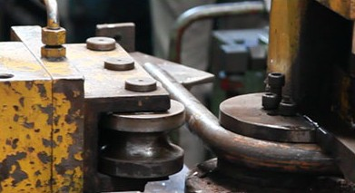
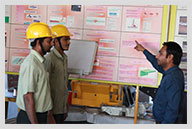
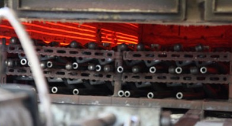
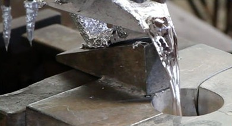

MACPL manufactures auto components of complex design which are critical for manufacturing. To cater to such demanding requirements, MACPL continually strengthens its processes through the latest manufacturing systems, up-to-date technical knowledge and skills.

01Tube Bending
Tube bending is a cluster of various sub-processes with a multiple-machine setup, including induction heating machines and hydraulic presses. Both cold bending and hot bending are carried out efficiently.
The bending operation is carried out with sophisticated CNC cold tube bending machines and robotic hot bending, both with capacities of more than 2000 parts a day. Robotic arms help achieve automation and high productivity — homing, resistance heating, first and second bend… the robot does everything from picking up the raw tube to placing the bent part in the tray.

02Welding
Welding at MACPL is characterised by method, accuracy and safety. The expansive process of heavy fabrication requires welding to be done in two parts — tack welding and full welding. Child parts are attached to the main component by tack welding, which simplifies the operator’s job at the full-welding stage. Overhead cranes (OHC) make material movement easy and swift.

Keeps this process with the times. Operators are periodically trained and equipped with the latest techniques to sharpen their skills.

03Heat Treatment
Each process plays its role in the durability and quality of the component, and we place them in a logical sequence. Heat treatment comes after welding to relieve stresses and give the component optimum strength.
The furnace plays a key role in achieving the precise microstructure of the component. MACPL designs and manufactures its own furnaces, enabling prompt monitoring and correction of small changes in process parameters. Strictly controlled parameters ensure properly stress-relieved and normalised components — and the furnaces contribute to substantial cost savings.

04Casting
MACPL has almost 20 years of experience in the aluminium gravity die casting process and has built the capability to process a wide range of component dimensions.
MACPL makes aluminium alloy in-house to save substantially on material cost. With in-depth knowledge of material properties and process characteristics, the company is developing indigenous casting technology — and strict process parameters ensure castings with zero blow holes. This enables us to offer cost-saving proposals to our customers.
Manufacturing Systems
For the last 10 years, MACPL has invested time and resources in adopting various manufacturing management systems. MACPL manages its shop floor and production equipment using Total Productive Maintenance techniques, with consistent benefits on Product, Quality, Cost, Delivery, Safety and Morale (PQCDSM) parameters.
Our Organisation
The company’s team has professionals with varied expertise to manage technicalities, administration and commercials. With such a team, the company caters to 14 OEMs for various products — from steering system assemblies to suspension assemblies to critically fabricated components for earth-moving equipment.
Process Videos
The automation, accuracy and scale of our processes, captured on video.